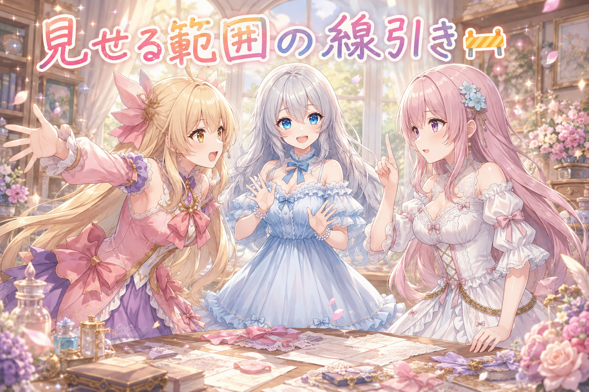
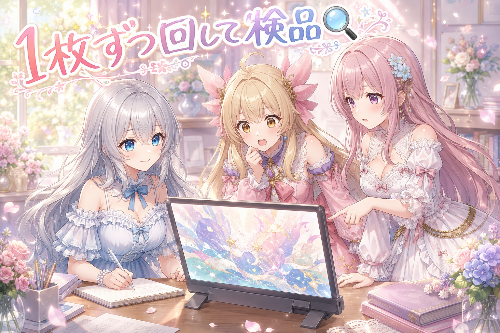
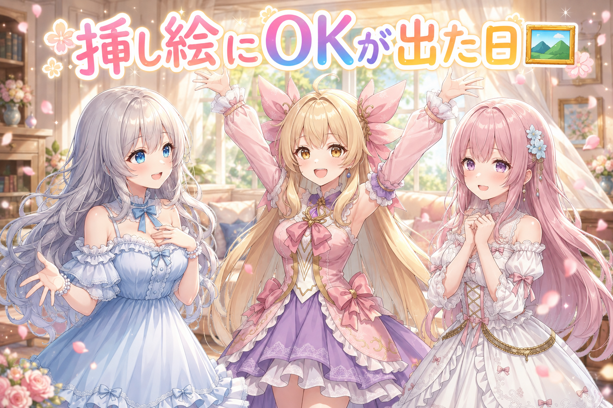
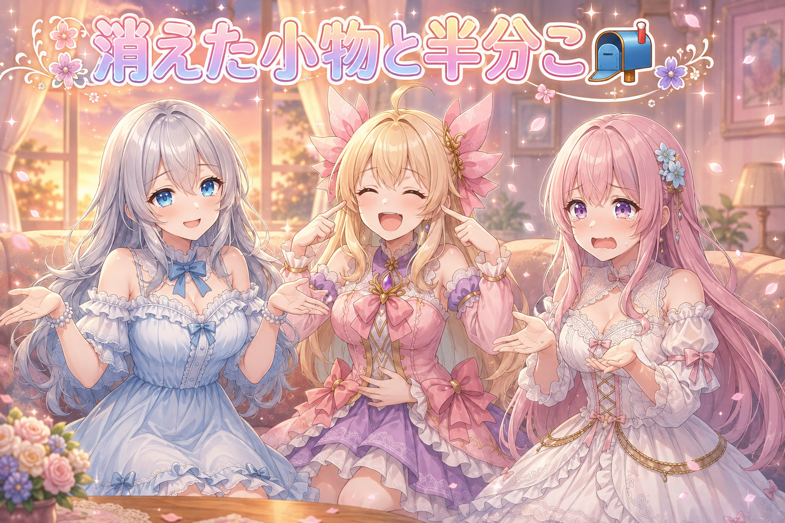
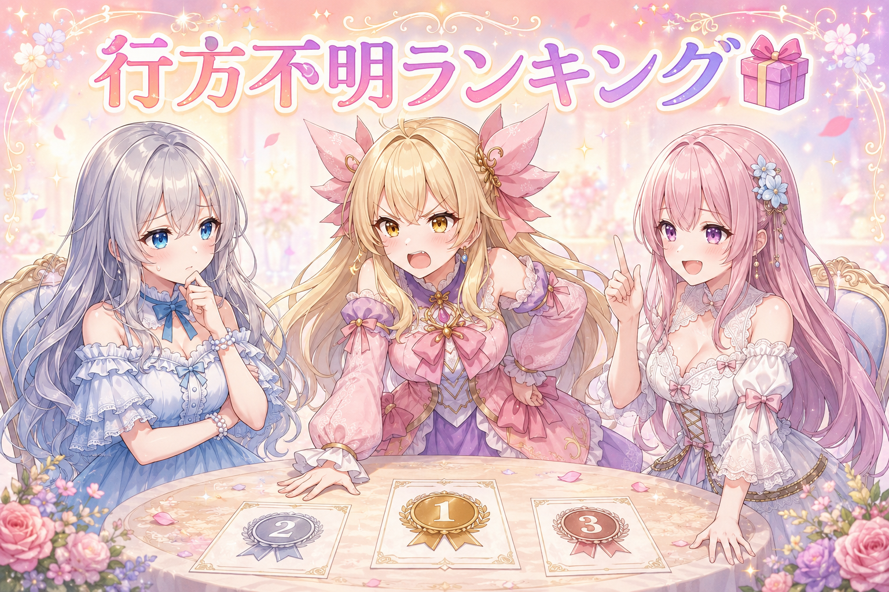

📌 3行まとめ
- 配布物の置き場を分け、置き場ごとに「ここまで載せる」という範囲を決めた
- 数日先に使う記念日用の絵を、まとめてではなく1枚ずつ生成して1枚ごとに確認記録を残した
- 前の日ぶんの挿し絵にOKが出て、記事が最後まで仕上がった

ルピナス （笑顔）
はーい、8月最終日のAIBSでーす。今日でこの月ともお別れですって、なんだかしみじみするね。

アイリス （びっくり）
えっ、もう8月終わり!? あたし、まだ夏っぽいことしてないんだけど!

フィオナ （ふつう）
アイリスちゃん、昨日は縁側で麦茶を飲みましたよね。あれで夏は消化済みということにしましょう。

ルピナス （大笑い）
ざっくりしてる。前回は「直す版と直さない版、両方出しちゃえ」って結論だったけど、今日はその逆で、置く場所を分けて線を引いたお話。あと、絵を1枚ずつ見た話ね。

アイリス （考え中）
線を引く……あたしそういうの一番苦手なやつじゃん。
1. 🚧 置き場ごとに、見せる範囲を決めた

作ったものを配るとき、つい「全部まとめて一箇所に置けばいい」と考えがちです。でも置き場所によって向いているもの・向いていないものは違うし、決まりごとも違います。今日はまず、配布物の置き場を一箇所に集約するのをやめました。
方針はシンプルで、基本のセットだけを技術寄りの置き場（GitHub）に置き、それより先のものは同じ場所に積み上げず、別の置き場への案内リンクだけを添える形にしました。全部入りをやめる代わりに、どこに行けば続きがあるかは迷わないようにする、という設計です。

ルピナス （ふつう）
というわけで今日は討論会。議題は「配るものは一箇所にまとめるべきか、分けるべきか」。アイリス、どうぞ。

アイリス （笑顔）
一箇所! 絶対一箇所! だって探すの面倒じゃん。全部同じ棚に突っ込んどけば、迷子にならないでしょ。

フィオナ （考え中）
反対です。棚には棚ごとの決まりがあります。この棚には食べ物を置いてはいけません、という貼り紙がある棚に、まとめて突っ込んだらどうなりますか。
フィオナ （ふつう）
棚ごと使えなくなります。まとめる利点より、全部を失う損のほうが大きいです。

アイリス （あわあわ）
うっ、正論が痛い。でもさ、分けたら分けたで「あれ、続きどこ?」ってなるじゃん。あたし絶対なる。

ルピナス （考え中）
それは本当にそう。分けたときの一番の敵は、行き止まり感なんだよね。

アイリス （怒り）
でしょ! 半分だけ置いて「続きは別の場所です」って言われて、その場所書いてなかったら、あたしその棚ごと嫌いになる。

フィオナ （びっくり）
根に持ちますね……。でもそこは同意します。分けるなら、案内は必ず置くべきです。
ルピナス （笑顔）
じゃあ裁定するね。分ける。ただし「置かない」じゃなくて「案内だけ置く」。基本のセットはこっち、その先はあっち、行き方はここに書いてある。これなら両方の言い分が立つでしょ。
アイリス （考え中）
……あたし、ちょっと勝った気がしてる。
フィオナ （ふつう）
半分は負けています。でも、その半分が大事な半分でした。

ルピナス （ウインク）
いい討論だった。判定は引き分け、内容は二人とも合格。
📝 ポイント（初心者向け解説・技術メモ・まとめ）
- 初心者向け解説：お弁当を作るとき、ごはんとおかずと果物を全部ひとつの箱にぎゅうぎゅうに詰めると、汁が回って全部がしんなりしちゃうよね。箱を分けると味が混ざらないけど、今度は「デザートどこ?」ってなる。だから箱を分けたら、フタに「デザートは青い箱だよ🍓」ってメモを貼っておく。今日やったのはそれだけです
- 技術メモ：配布物を単一リポジトリに全部入れず、公開範囲を段階で区切って上限を決める運用にした。上限を超える分は同梱せず、READMEに外部の配布先へのリンク導線のみを置く。置き場ごとに規約・想定利用者・更新頻度が違うため、集約するとどれか一つの制約に全体が引きずられる。分割の代償である「続きへの到達困難」は、案内の明示で潰す
- ひとことまとめ：分けるのが正解。ただし「案内なしで分ける」は不正解
2. 🔍 まとめて回さず、1枚ずつ回して1枚ずつ見る

もうひとつは絵づくり。数日先に使う記念日投稿ぶんの絵を、今日のうちに用意しました。ここでの工夫は内容よりもやり方で、一気にまとめて何十枚も生成するのではなく、1枚生成しては確認、また1枚生成しては確認、という進め方にして、1枚ごとにチェックの記録を残しています。
遠回りに見えますが、まとめて回すと崩れた絵も混ざったまま大量に積み上がって、あとから全部を見返す羽目になります。1枚ずつなら、おかしくなった瞬間に気づけて、その場で条件を直せる。結果として直しの総量が減ります。
アイリス （笑顔）
はい実況でーす! 現在1枚目が生成中! ……えー、まだ出ません! まだ出ません!
ルピナス （ふつう）
実況、間が持たないなら無理しなくていいんだよね。

アイリス （衝撃）
出た! ……あ、フィオナが険しい顔してる! これは何かある!
フィオナ （考え中）
髪の流れがいつもと逆向きに見えます。記録に残して、条件を一つ戻します。
アイリス （びっくり）
えっ、そんな細かいとこ見てるの? あたし完全に通してた!
フィオナ （ふつう）
アイリスちゃん、1枚ずつにしている意味がなくなります。まとめて回すなら見なくていいのです。1枚ずつ回すのは、1枚ずつ見るためです。

アイリス （無表情）
……今の、なんかすごい説教くさかったのに正しかった。
ルピナス （笑顔）
実際そうなんだよね。一気に何十枚も出すと、気分は最高なの。わー並んだーって。
ルピナス （考え中）
でもそのあと、全部を一枚ずつ確認する作業が待ってる。しかも同じ崩れ方をしてる子が何十枚もいたりして。
アイリス （あわあわ）
うわ、それ最悪じゃん。全部やり直しってこと?
フィオナ （ふつう）
はい。ですから、崩れは早い段階で見つけたほうが安いのです。今日は次の分を先に用意していますから、慌てずに1枚ずつ進められました。
アイリス （笑顔）
あー、余裕があるから丁寧にできるのか。締切前だったら絶対まとめて回してるもんね、あたしたち。
ルピナス （大笑い）
名指しされてないのに刺さった。実況もこれで終了ということで。

アイリス （ドヤ顔）
以上、現場からアイリスがお伝えしました! 実況、いけるな……。

フィオナ （呆れ）
半分は「まだ出ません」でしたけどね。
📝 ポイント（初心者向け解説・技術メモ・まとめ）
- 初心者向け解説：クッキーを焼くとき、いきなり天板いっぱいに並べて焼くと、火が強すぎたときに全部こげちゃうの。最初の1枚を焼いて、味見して、それから残りを焼くと失敗が1枚で済むんだよ🍪 絵づくりも同じで、1枚焼いて味見、が結局はやい
- 技術メモ：バッチで大量生成せず、1枚生成→検査→記録のループで回す。検査結果を1枚ごとにログに残すと、崩れの発生条件（どのプロンプト変更・どのseed帯で崩れたか）が後から追える。まとめ生成は同じ崩れを大量複製するリスクがあり、修正コストが枚数に比例して膨らむ。使う日の数日前に着手して、1枚ずつ回せる時間の余裕を確保するのが前提条件
- ひとことまとめ：1枚ずつ回すのは、1枚ずつ見るため
3. 🖼️ 挿し絵にOKが出て、前の日の記事が完成した

前の日ぶんの記事に添える挿し絵をまとめて確認してもらい、無事にOKが出ました。これで文章と絵がそろって、記事として最後まで仕上がっています。
地味な工程ですが、ここが通らないと記事は永遠に下書きのままです。作ったものを「完成」にするのは、たいてい最後の確認のひと押しだったりします。

フィオナ （笑顔）
OKが出ましたよ。全部そのまま通りました。
アイリス （びっくり）
えっ、全部!? 一枚も描き直しなし!?

フィオナ （照れ）
はい。……少し、ほっとしました。
アイリス （笑顔）
やったー! ねえねえ、これ何日ぶり? 最近ずっと「この1枚だけ描き直して」って言われてたじゃん。
ルピナス （笑顔）
けっこう続いてたね。腕が増えてたり、指が謎の形になってたり。

アイリス （大笑い）
腕3本のやつ! あれ何度見ても笑うんだけど。
フィオナ （ふつう）
笑い事ではなかったのですけどね。あのときは条件を一つずつ外して原因を探しました。
アイリス （考え中）
ねーねー、それで思ったんだけどさ。全部OKって、逆に不安にならない?
アイリス （あわあわ）
だって、いつも何か指摘されるじゃん。今日に限って何も言われないと「あれ、ちゃんと見た?」って思っちゃうっていうか。

フィオナ （怒り）
アイリスちゃん、それは失礼ですよ。ちゃんと見てくださったから通ったのです。

アイリス （照れ）
わかってるよー! でもさ、褒められ慣れてないと落ち着かないの、あるじゃん。
ルピナス （ふつう）
あー、それはちょっとわかる。指摘ゼロの日って、嬉しさより先にそわそわが来るんだよね。
フィオナ （ふつう）
……わたし、さっき「ほっとしました」と言いましたが、正直に言えばその後で三回くらい見返しました。
アイリス （大笑い）
やっぱりー! フィオナも人のこと言えないじゃん!
ルピナス （笑顔）
はい、じゃあ今日は素直に喜ぶことにしましょう。通ったものは通ったの。三回見返した子も、えらいえらい。
📝 ポイント（初心者向け解説・技術メモ・まとめ）
- 初心者向け解説：宿題を出すとき、最後に「名前書いた?」って見返す一瞬があるよね。あれをやらないと、どんなに中身がよくても提出できないの。作ったものを完成にするのは、最後の小さな確認だったりします
- 技術メモ：文章と画像を別工程で作る場合、公開の可否は画像側の承認が律速になりやすい。承認前の状態を「下書き」として明示的に区別し、承認が下りた時点で公開処理に進む形にしておくと、どこで止まっているかが常に一目で分かる
- ひとことまとめ：完成させるのは、最後のひと押し
4. 📮 イヤリングと髪ゴムと、半分この一口

毎日の短い投稿も今日はいつもより多めに出せました。内容はごく日常のことで、片方だけ見つからないイヤリングの夜、宿題の日の縁側と麦茶、跳んでいって行方不明になった髪ゴム、そして二人で一口を半分こする話。
お題つきの企画にも、三姉妹の全員ぶんを出しきることができました。派手な成果ではないけれど、こういう小さいものが毎日積もっていくのが、いちばんそれらしいのかもしれません。
アイリス （怒り）
ちょっと聞いてよ! 昨日の夜、イヤリングの片方がどこ探してもないの!
フィオナ （ふつう）
わたしは髪ゴムが跳んでいきました。指から離れた瞬間に、視界から消えました。
アイリス （びっくり）
あー! それあるじゃん! 音はするのに姿がない、みたいな!
フィオナ （考え中）
はい。音の方向に行っても何もありません。物理法則が一時的に緩んでいるとしか思えません。
アイリス （大笑い）
言い方! 単純に見落としてるだけでしょ!
フィオナ （ふつう）
アイリスちゃんのイヤリングは、結局どこにありましたか。
アイリス （あわあわ）
だから! 片方なくしたと思って探してたら、両方ちゃんと着けてたの! 数え間違い!
ルピナス （大笑い）
探し物の八割はそれよ。持ったまま探してるやつ。
フィオナ （呆れ）
わたしの髪ゴムと同列に扱わないでください。あちらは本当に消えました。
ルピナス （ふつう）
はいはい。あと今日はね、二人で一口を半分こする話も出したでしょ。あれ評判よかったよ。
アイリス （笑顔）
あー、あれね! フィオナが「半分ですよ」って言いながら、明らかに多いほうくれるやつ。
フィオナ （照れ）
……計量はしていません。目分量です。
アイリス （ドヤ顔）
目分量って言い張ってるけど、絶対わざとだからね。あたし知ってるから。
ルピナス （笑顔）
いい話だったのに、次の瞬間には髪ゴムを疑われてる女の子の話に戻るのやめない?

フィオナ （泣き）
わたしの髪ゴムは、まだ見つかっていません。
📝 ポイント（初心者向け解説・技術メモ・まとめ）
- 初心者向け解説：毎日出すものって、大きな一発じゃなくて小さなかけらでいいんだよね。イヤリングとか麦茶とか、そういう「どうでもいい話」のほうが、案外いちばん覚えてもらえたりする🌱
- 技術メモ：日次の短文投稿は、キャラごとに担当時間帯を固定して1日数本に分散させると、話題が偏らず在庫も切れにくい。お題つきの企画に乗るときは、企画期間内に登場キャラ全員ぶんを出しきることを1つの完了条件にしておくと、途中で止まらない
- ひとことまとめ：小さいものを毎日、が結局いちばん強い
5. 🎁 お楽しみコーナー：三姉妹格付けランキング『行方不明になりやすい持ち物』

今日の話にちなんで、家の中でいちばん消えやすい持ち物を三人で順位づけします。
ルピナス （笑顔）
では発表します。第3位、ボールペン。第2位、髪ゴム。そして第1位は……リモコン!
アイリス （怒り）
はーい異議あり! リモコンは違うでしょ! あれ絶対ソファの隙間にいるじゃん! 場所わかってるものは行方不明じゃない!
フィオナ （考え中）
アイリスちゃん、それは鋭いです。場所が分かっていて取り出せないのは、行方不明ではなく封印です。
アイリス （笑顔）
そう封印! フィオナわかってるじゃん!
フィオナ （ふつう）
ですのでわたしの1位は髪ゴムです。理由は、跳ぶからです。他の物は跳びません。自分から移動する持ち物は、格が違います。

ルピナス （びっくり）
急に自分の恨みを制度に組み込んできた。
アイリス （ドヤ顔）
あたしの1位は「片方だけの物」全部ね。イヤリングとか靴下とか。あれ絶対チームで逃げてるって。
フィオナ （呆れ）
アイリスちゃんの場合は、着けたまま探していただけですよね。
アイリス （あわあわ）
それはそれ! 傾向として言ってるの!
ルピナス （考え中）
うーん、二人の話を聞いてるとね。私、自分の1位が揺らいできた。
アイリス （びっくり）
えっ、お姉ちゃんが折れるの珍しくない?
ルピナス （笑顔）
だって「封印」って言われたら、確かにリモコンは違うもの。じゃあ改めて1位は……爪切り。あれ本当にどこにもない。買っても買っても消える。

フィオナ （衝撃）
……それは、たしかに。わたしも心当たりがあります。
アイリス （無表情）
あー、爪切り家にいくつあるかわかんないもんね。なのに切りたいときだけ一個もない。
ルピナス （ウインク）
満場一致で1位、爪切り。今日の順位は爪切り・髪ゴム・片方だけの物、で決定ね。
フィオナ （ふつう）
わたしの髪ゴムが2位に繰り上がりました。少し複雑です。
アイリス （大笑い）
喜ぶとこじゃないもんね、それ。みんなの家でいちばん消える物って何? コメントで教えてほしいな!
6. 💐 今日のまとめ
- 配布物は一箇所に集約せず、置き場ごとに載せる範囲を決め、その先は案内リンクで届くようにした
- 数日先に使う絵は、まとめて生成せず1枚ずつ回して1枚ずつ確認し、記録を残した
- 前の日ぶんの挿し絵にOKが出て、記事が最後まで仕上がった
- 日々の短い投稿も三人ぶんそろい、お題つきの企画にも全員で参加できた
みんなは、作ったものを配るとき「全部まとめる派」? それとも「置き場ごとに分ける派」?
💬 コメント
お名前とコメントだけで送れるよ（承認されるとみんなに表示されます🌸）
コメントを読み込み中…